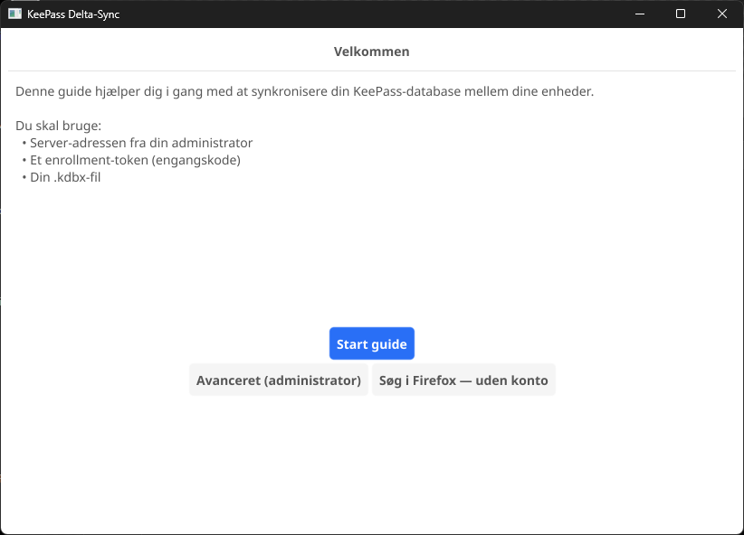
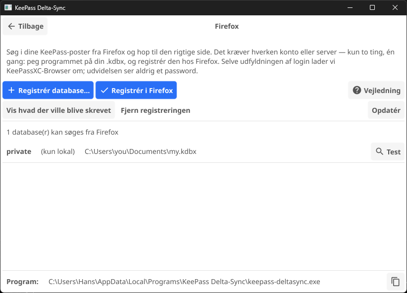
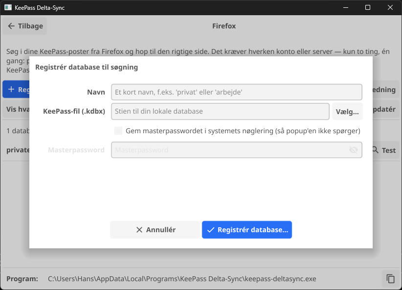

DeltaSync til Firefox
Skriv kp i adresselinjen, dernæst et par bogstaver af den konto du leder efter, så fører Firefox dig til entryens hjemmeside. Det er hele udvidelsen. Den besvarer dét spørgsmål, en password-manager efterlader dig med — hvilken side lå den konto nu på? — og går så af vejen igen.
Selve login er ikke dens opgave. Det er stadig KeePassXC-Browsers arbejde; den udfylder brugernavn og password, men kan ikke hjælpe dig med at finde siden i første omgang. Denne her lukker netop det hul og intet andet — og derfor har den aldrig brug for at se et password.
Du behøver ikke en DeltaSync-server
DeltaSync er normalt et sync-system med en server bagved, men en søgning rører aldrig netværket: udvidelsen spørger en lille lokal hjælper, som læser din egen .kdbx-fil og svarer ud fra den alene. Der er derfor to måder at sætte det op på, og den anden har intet med synkronisering at gøre:
- Du bruger allerede DeltaSync — din database er registreret hos klienten, og der er ikke mere at konfigurere. Spring til trin 2.
- Du vil bare have søgningen — installér klienten, peg den på din
.kdbxmed én kommando, og tilmeld dig aldrig nogen server. Det er trin 1 herunder.
Uanset hvilken vej, kan de to første trin klikkes i stedet for at skrives. Har du installeret skrivebordsprogrammet, så start med den korte vej — det er det samme arbejde, bare uden terminal.
Hvad du skal bruge
- KeePassXC, for dens
keepassxc-cli— det er den der rent faktisk åbner din database keepass-deltasync-klienten: en præ-bygget binær til Linux, macOS eller Windows, eller Windows-installeren, som har den med- Firefox 142 eller nyere — selve udvidelsen hentes fra addons.mozilla.org i trin 3
Den korte vej — trin 1 og 2 med knapper
De to trin herunder er kommandoer, og på Windows ligger klienten ikke engang på din PATH. Skrivebordsprogrammet sparer dig for begge dele: de er to knapper på én skærm, og den skærm kan nås uden en konto. Resultatet er det samme, så vil du hellere skrive, kan du springe videre til trin 1.
Åbn KeePass Delta-Sync. Har du aldrig tilmeldt en enhed, åbner den på sin velkomstskærm, og knappen du skal bruge siger det selv:

Hele Firefox-opsætningen står på den ene skærm:

Trin 1, med knapper: Registrér database…
Registrér database… er add-local med en filvælger på: giv databasen et kort navn, peg på .kdbx-filen, færdig. Intet uploades, og hverken server, token eller konto er involveret.

--save-password. Sætter du det, kontrolleres masterpasswordet ved at åbne databasen, før det overlades til styresystemets nøglering — så popup'en aldrig spørger. Lader du det stå tomt, spørger udvidelsen dig i stedet.Trin 2, med knapper: Registrér i Firefox
Registrér i Firefox er install-browser-host. Den viser hvad den skrev, og hvilke Firefox-varianter den registrerede sig hos — læs den liste, den er svaret på om den fandt din — og minder dig derefter om at genstarte Firefox, for det er dét, der får registreringen til at virke.
Listen nederst på skærmen er dét, udvidelsen ville kunne søge i. Test på en række kører hele kæden med browseren holdt udenfor: den åbner databasen og udskriver præcis hvad Firefox ville modtage. Virker dét, men udvidelsen stadig ikke, sidder problemet mellem Firefox og klienten — og sidste afsnit tager over derfra.
Dermed er trin 1 og 2 klaret. Fortsæt ved trin 3, selve udvidelsen, som er den samme uanset vejen hertil.
Trin 1 — peg klienten på din database
Bruger du allerede DeltaSync, er dette klaret: enroll og init registrerede databasen da du satte klienten op. Gå videre til trin 2.
Har du ingen server, skal klienten stadig vide hvilken fil den skal søge i. Én kommando fortæller den det, og intet om den fil forlader din maskine:
keepass-deltasync add-local privat ~/keepass/min.kdbxprivat er blot en etiket — den dukker op i popup'en når mere end én database er låst op. Gentag kommandoen for hver fil du vil kunne søge i. Ingen server, ingen token, ingen konto er involveret.
Sæt --save-password på, hvis du helst vil slippe for at blive spurgt om masterpasswordet hver gang idle-låsen udløber. Det verificeres ved at åbne databasen, før det gemmes, og det havner i styresystemets nøglering — aldrig i en fil.
keepass-deltasync tui den samme sektion, og den er der uanset om du har en konto eller ej.
Windows: hvor klienten ligger, og hvor kommandoerne skrives
Installeren lægger programmet og kommandolinje-klienten i samme mappe, og hvilken mappe afhænger af den installation du valgte:
- Kun for mig — standardvalget, ingen administrator-prompt:
%LOCALAPPDATA%\Programs\KeePass Delta-Sync\ - For alle brugere:
C:\Program Files\KeePass Delta-Sync\
keepass-deltasync.exe i den mappe er det program, alle kommandoer på denne side handler om. Den ligger ikke på din PATH, så den hurtigste vej til en terminal der kan se den, er at åbne mappen i Stifinder, klikke i adresselinjen, skrive powershell og trykke Enter. Terminalen åbner i mappen, og kommandoerne virker med .\ foran:
.\keepass-deltasync.exe add-local privat C:\Users\dig\Dokumenter\min.kdbxI tvivl om hvilken installation du har? Indsæt %LOCALAPPDATA%\Programs\KeePass Delta-Sync i Stifinders adresselinje; findes mappen ikke, er det den under Program Files. Programmet viser selv stien nederst på sin Firefox-fane.
Trin 2 — lad Firefox tale med klienten
Firefox kører ikke et program, den ikke har fået besked om på forhånd. Én kommando klarer det:
keepass-deltasync install-browser-hostDen skriver et lille manifest ind i dit eget brugerområde — ingen administrator nødvendig — og på Windows desuden en registreringsdatabase-nøgle under HKCU. Sæt --dry-run på først, hvis du vil se præcis hvad den ville skrive. Kør den igen hvis du flytter binæren, for manifestet husker hvor den ligger.
Læs hvad den skriver: den viser hver Firefox, den har registreret sig hos, og den liste er svaret på om den fandt din. I skrivebordsprogrammet er dette knappen Registrér i Firefox, og den viser dig det samme output.
Linux: der er mere end én Firefox
En pakket Firefox, en snap og en flatpak læser hver sin mappe, og kommandoen klarer alle tre af sig selv. To af dem har en hage:
- Snap — standarden på Ubuntu 22.04 og nyere. En indespærret Firefox kan ikke nå punktum-mapper i dit hjem, så hold binæren et almindeligt sted som
~/binfrem for~/.local/bin. - Flatpak — sandkassen skal have lov til at nå programmet overhovedet. Kør dette én gang, og genstart så Firefox; en override når ikke ind i et program der allerede kører:
flatpak override --user --talk-name=org.freedesktop.Flatpak org.mozilla.firefox
Er du i tvivl om hvilken du har? snap list firefox og flatpak list | grep -i firefox afgør det. Installerer du en anden Firefox senere, skal install-browser-host køres igen.
macOS: fjern karantæne-mærket
macOS mærker alt hentet med en browser, og Firefox starter hjælperen uden en dialog du kunne godkende — så en mærket binær dør tavst. Fjern mærket én gang:
xattr -d com.apple.quarantine /usr/local/bin/keepass-deltasyncTrin 3 — installér udvidelsen
Den ligger på Mozillas egen udvidelsesside, signeret og gennemgået:
Hent DeltaSync — KeePass search & go
Den beder om to tilladelser: native messaging, som er dens vej til klienten fra trin 2, og storage, som holder søgeindekset så længe Firefox er åben. Den beder om ingen værtstilladelser og kører ingen content scripts — den kan altså ikke se de sider du besøger, og den får aldrig et password.
Genstart Firefox efter trin 2, hvis du ikke allerede har gjort det. Det er dét, der får den til at opdage klienten.
Fra kildekoden i stedet
Udvidelsen er syv almindelige filer uden byggetrin, og den pakke der ligger på releases-siden, er byte-reproducerbar ud fra sin tag — du kan altså kontrollere, at det du installerer, er det kildekoden siger. Det byg er usigneret, og det afgør hvordan du kan installere det:
- Enhver Firefox, for én session:
about:debugging#/runtime/this-firefox→ Indlæs midlertidig tilføjelse… → vælgextension/manifest.jsonfra en klon. Firefox glemmer den, når den lukkes. - Developer Edition, Nightly eller ESR, permanent: sæt
xpinstall.signatures.requiredtilfalseiabout:config, og installér.xpi-filen via about:addons → tandhjulet → Installér tilføjelse fra fil…
Udvidelsens ID ligger fast uanset vejen, så fjern den ene kopi før du installerer den anden.
Sådan bruger du den
- Adresselinjen: skriv
kp, et mellemrum, og din søgning. Vælg et forslag og tryk Enter. - Popup: knappen på værktøjslinjen, eller
Alt+Shift+K. Piletaster flytter, Enter åbner i den aktuelle fane, Ctrl/Cmd+Enter eller midterklik åbner en ny. - Lås: smider det cachede indeks væk og beder hjælperen slette hvad den måtte ligge inde med.
Søgningen matcher på værtsnavn, titel og gruppe, og sætter værtsnavne højest — det er som regel dét man husker. En entry med flere adresser (KeePassXC' Additional URLs) vises som én række med et mærke; vælger du den, foldes hver adresse ud nedenunder med bedste match først, så ingen af dem er uden for rækkevidde.
Første søgning efter en genstart kræver dit masterpassword. Ligger din database i styresystemets keyring — hvilket er dét --save-password i trin 1 sørger for — henter hjælperen det selv derfra, og det passerer aldrig gennem Firefox. Gør den ikke, spørger popup'en, og hjælperen holder det kun i hukommelsen. Det slettes når idle-låsen udløber, eller når du trykker Lås.
Hvis noget ikke virker
Der sker ingenting når jeg skriver kp
Firefox læser native messaging-manifester ved opstart, så den skal genstartes efter install-browser-host — et nyt vindue er ikke nok, hele programmet skal lukkes.
Hjælper en genstart ikke, så åbn popup'en: kan den ikke nå hjælperen, siger den det, og tilbyder en knap tilbage til denne side.
Det virkede, og så holdt det op
Manifestet husker den fulde sti til klient-binæren. Har du flyttet, omdøbt eller geninstalleret den, så kør keepass-deltasync install-browser-host igen.
Er det Firefox eller er det min opsætning?
Du kan afprøve hele kæden uden at involvere browseren. Dette bygger indekset præcis som en søgning ville, og udskriver hvad udvidelsen ville modtage:
keepass-deltasync browser-host --probe privat
# No keyring entry for privat — the extension would prompt here.
# Masterpassword for privat:
# [ { "title": "Eksempel-konto", "urls": ["https://example.com/login"], … } ]
# 1 searchable entries indexed from privat.Virker dét, men udvidelsen ikke, sidder problemet mellem Firefox og hjælperen — start med en genstart. Virker det heller ikke, er det database-bindingen eller keepassxc-cli.
"keepassxc-cli not found"
Hjælperen leder de sædvanlige steder for din platform. Ligger din et usædvanligt sted, så bekræft at det er dét der er galt ved at pege direkte på den:
keepass-deltasync browser-host --probe privat --keepassxc-cli "/sti/til/keepassxc-cli"Skal det holde ved, så tilføj samme flag til den launcher, install-browser-host har lavet — den udskriver stien til den, og til manifestet, hver gang du kører den.
Popup'en siger at ingen databaser er registreret
Så kører hjælperen og svarer — trin 2 og 3 er i orden — og trin 1 har ikke fundet sted endnu. Tryk Registrér database… i skrivebordsprogrammet, kør keepass-deltasync add-local, eller vælg Firefox-søgning i keepass-deltasync tui. keepass-deltasync databases viser hvad der er registreret; en søge-kun database er mærket L.
Linux: den siger den installerede, men der sker ingenting
Næsten altid Firefox-varianten. install-browser-host udskriver dem, den registrerede sig hos — står din ikke på listen, var den ikke installeret da du kørte kommandoen, og en ny kørsel retter det.
Står den på listen, nægter sandkassen at starte programmet: en flatpak uden flatpak override fra trin 2, eller en snap med binæren i en punktum-mappe. Kør launcheren i hånden for at skille de to ad — den er ukonfineret dér, så virker det, er det indespærringen der stopper den:
echo | ~/snap/firefox/common/keepass-deltasync/browser-host.shEn strøm af binær-agtigt output er en succes. Permission denied er ikke.
Designet og dets sikkerhedsgrænser er beskrevet i docs/browser-extension.md. Vil du også have sync-halvdelen af DeltaSync, så start på Kom i gang.